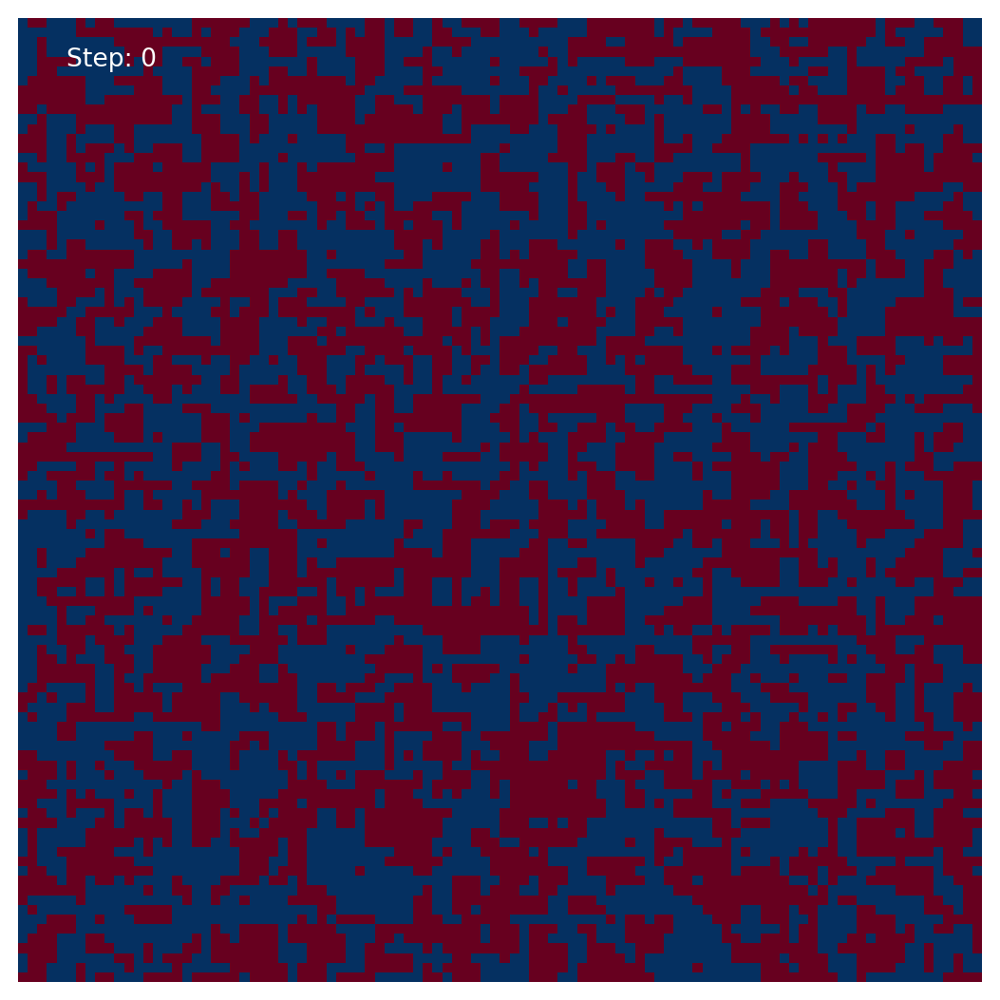

import numpy as np
import matplotlib.pyplot as plt
from matplotlib.animation import FuncAnimation
# Set up the parameters
N = 100 # Number of spins
J = 1.0 # Exchange energy
T = 1.0 # Temperature
# Initialize the spins
spins = np.random.choice([-1, 1], size=(N,N))
# Calculate the energy
def calc_energy(spins):
energy = 0
for i in range(N):
for j in range(N):
energy -= spins[i,j] * (spins[(i+1)%N, j] + spins[i,(j+1)%N])
return energy / 2
# Calculate the magnetization
def calc_mag(spins):
mag = np.sum(spins)
return mag 3 Metropolis Hastings Code
# Monte Carlo simulation using the Metropolis-Hastings algorithm
def monte_carlo(spins, T):
# Iterate over the atoms in the system
for m in range(N):
for n in range(N):
# Choose a random atom
a = np.random.randint(0, N)
b = np.random.randint(0, N)
# Calculate the change in energy if the spin of the atom is flipped
delta_E = 2 * spins[a, b] * (spins[(a + 1) % N, b] + spins[a, (b + 1) % N] + spins[(a - 1) % N, b] + spins[a, (b - 1) % N])
# Use the Metropolis-Hastings algorithm to determine whether or not to flip the spin
if delta_E <= 0:
# If the change in energy is negative, flip the spin
spins[a, b] *= -1
elif np.exp(-delta_E / T) > np.random.rand():
# If the change in energy is positive, flip the spin with probability exp(-delta_E / T)
spins[a, b] *= -1
# Return the resulting spin array
return spinsfig = plt.figure(figsize=(7, 7))
ax = plt.subplot(111)
# Set up the plot
im = ax.imshow(spins, cmap=plt.cm.RdBu, vmin=-1, vmax=1, animated=True)
plt.axis('off')
# create a counter and add it to the plot
counter = ax.annotate('Step: 0', xy=(0.05, 0.95), xycoords='axes fraction', color='white')
# Set up the function to update the plot
def update(frame):
global spins, counter
spins = monte_carlo(spins, T)
im.set_array(spins)
# update the step count on the plot
counter.set_text('Step: {}'.format(frame))
return [im, counter]
ani = FuncAnimation(fig, update, frames=np.arange(0, 200000), interval=0, blit=True)
'''ani.save('ising_model_animation.gif', fps=3)'''
''''ani.save('animation.gif', writer='imagemagick')'''
plt.show()